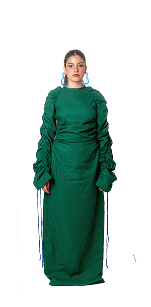

«
Mi cuerpo se mueve a través de emociones y sentimientos creando unos estímulos a los que reacciono positiva o negativamente. Ambos son necesarios, después de todo, no hay luz sin oscuridad; no hay valor sin miedo; no hay cerca sin lejos; nada existe sin su opuesto. La clave está en encontrar el termino medio, la fusión, el balance entre estos. Cuando se consigue esto, se deja ser, se contacta con una sensación de plenitud, de paz y de amor que amplía la conciencia hasta trascender de uno mismo.»
Positivo
Esa sensación de luz, colores, viveza, un dia soleado, comer tu comida favorita en un lugar bonito, cuando te enamoras, esa sensación de cosquilleo en el estómago y de ver bonito todo lo que está a tu alrededor. Paz y tranquilidad mental enfocada hacia el éxito.
Negativo
Ver solo la parte mala de las cosas, sentir culpa, miedo, agotamiento, que todo está perdido, que nada saldrá bien. Una tormenta y lucha continua de la mente y de uno mismo.

Fusión
Lo bueno y lo malo conviviendo entre sí, el ying y el yang, la lección de un fracaso o el sacrificio de un éxito. Al final, esa es la vida, un cúmulo de circunstancias buenas y malas con las que tenemos que vivir y conjuntamente llevarlas de la mejor forma posible.